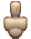

Unity Manual>User Guide>Creating Gameplay>Mecanim Animation System>A Glossary of Animation and Mecanim terms
A Glossary of Animation and Mecanim terms
| Icon | Term | Description | Type of Concept | Usage/Comments |
|---|---|---|---|---|
| Animation Clip related terms | ||||
| Animation Clip | Animation data that can be used for animated characters or simple animations. It is a simple "unit" piece of motion, such as (one specific instance of) "Idle", "Walk" or "Run" | sub-Asset | ||
| Body Mask | A specification for which body parts to include or exclude for a skeleton | Asset (.mask) | Used in Animation Layers and in the importer | |
| Animation Curves | Curves can be attached to animation clips and controlled by various parameters from the game | |||
| Avatar related terms | ||||
|  | Avatar | An interface for retargeting one skeleton to another | sub-Asset | |
| Retargeting | Applying animations created for one model to another | Process | ||
| Rigging | The prcoess of building a skeleton hierarchy of bone joints for your mesh | Process | done in an external tool, such as Max or Maya | |
| Skinning | The process of binding bone joints to the character's mesh or 'skin' | Process | done in an external tool, such as Max or Maya | |
| Muscle Definition | A Mecanim concept, which allows you to have a more intuitive control over the character's skeleton. When an Avatar is in place, Mecanim works in muscle space, which is more intuitive than bone space | |||
| T-pose | The pose in which the character has his arms straight out to the sides, forming a "T". The required pose for the character to be in, in order to make an Avatar | |||
| Bind-pose | The pose at which the character was modelled | |||
 | Human template | A pre-defined bone-mapping | Asset (.ht) | Used for matching bones from FBX files to the Avatar. |
| Animator and Animator Controller related terms | ||||
| Animator Component | Component on a model that animates that model using the Mecanim animation system. The component has a reference to an Animator Controller asset that controls the animation. | Component | ||
| Root Motion | Motion of character's root, whether it's controlled by the animation itself or externally. | |||
 | Animator Controller (Asset) | The Animator Controller controls animation through Animation Layers with Animation State Machines and Animation Blend Trees, controlled by Animation Parameters. The same Animator Controller can be referenced by multiple models with Animator components. | Asset (.controller) | |
| Animator Controller (Window) | The window where the Animator Controller Asset is visualized and edited. | Window | ||
| Animation Layer | An Animation Layer contains an Animation State Machine that controls animations of a model or part of it. An example of this is if you have a full-body layer for walking / jumping and a higher layer for upper-body motions such as throwing object / shooting. The higher layers take precedence for the body parts they control. | |||
| Animation State Machine | A graph controlling the interaction of Animation States. Each state references an Animation Blend Tree or a single Animation Clip. | |||
| Animation Blend Tree | Used for continuous blending between similar Animation Clips based on float Animation Parameters. | |||
| Animation Parameters | Used to communicate between scripting and the Animator Controller. Some parameters can be set in scripting and used by the controller, while other parameters are based on Custom Curves in Animation Clips and can be sampled using the scripting API. | |||
| Inverse Kinematics (IK) | The ability to control the character's body parts based on various objects in the world. | |||
| Non-Mecanim animation terms | ||||
| Animation Component | The component needed for non-Mecanim animations | Component | ||
Page last updated: 2012-11-07